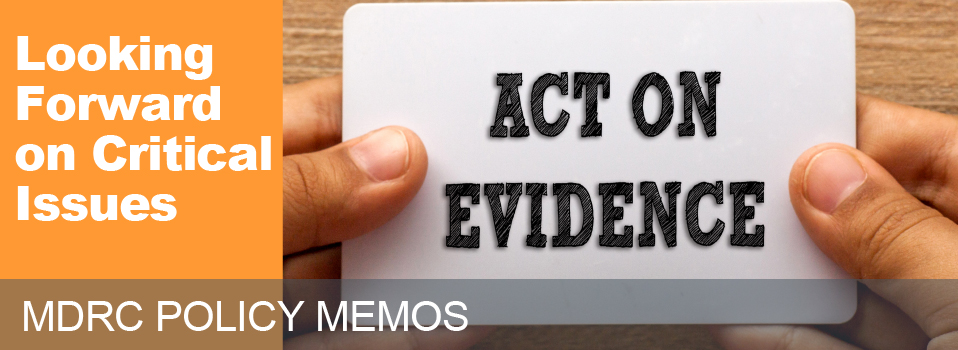

MDRC is committed to finding solutions to some of the most difficult problems facing the nation — from reducing poverty and bolstering economic self-sufficiency to improving public education and college graduation rates. We design promising new interventions, evaluate existing programs using the highest research standards, and provide technical assistance to build better programs and deliver effective interventions at scale. We work as an intermediary, bringing together public and private funders to test new policy-relevant ideas, and communicate what we learn to policymakers and practitioners — all with the goal of improving the lives of low-income individuals, families, and children.
Created in 1974 by the Ford Foundation and a group of federal agencies, MDRC is a nonprofit, nonpartisan education and social policy research organization dedicated to learning what works to improve programs and policies that affect the poor. MDRC is best known for mounting large-scale demonstrations and evaluations of real-world policies and programs targeted to low-income people. We helped pioneer the use of random assignment — the same highly reliable methodology used to test new medicines — in our evaluations. From welfare policy to high school reform, MDRC’s work has helped to shape legislation, program design, and operational practices across the country. Working in fields where emotion and ideology often dominate public debates, MDRC is a source of objective, unbiased evidence about cost-effective solutions that can be replicated and expanded to scale.
The City University of New York’s Accelerated Study in Associate Programs (ASAP) is an uncommonly comprehensive and long-term program shown to raise graduation rates among community college students. Following up after six years, MDRC finds that ASAP increases graduation rates and enables some students to earn their degrees sooner.
This grant program funds semester-long paid internships for college juniors and seniors with financial needs. These part-time opportunities, typically with hourly wages of $10-$14, are intended to provide meaningful experiences connected to students’ career interests. Despite some difficulties, many students had highly positive impressions of the program overall.
The ExCEL Network, a collaboration of researchers, preschool providers, and local officials, is exploring how benefits of early childhood interventions persist. The ExCEL P-3 project examines whether one preschool program, reinforced by a system-wide alignment of instruction into elementary school, has impacts on a range of skills through third grade.
Contact me
Inna Kruglaya at inna.kruglaya@mdrc.org